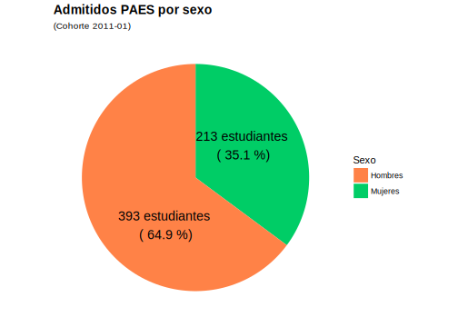
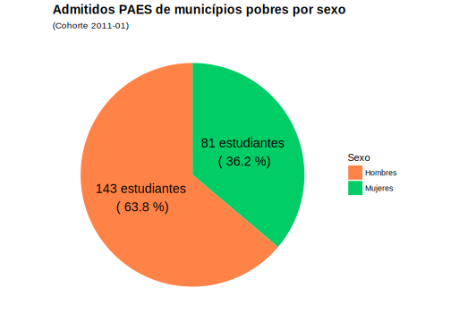
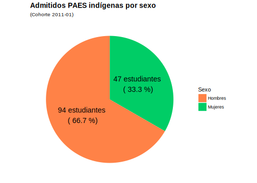
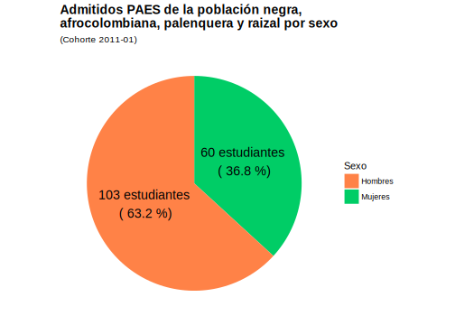

Impacto de los programas PAES y PEAMA
1
Introducción
1.1
Evaluación de impacto
2
Objetivos
2.1
OBJETIVO GENERAL
2.2
OBJETIVOS ESPECIFICOS
2.3
Ignorar por ahora
3
MARCO CONCEPTUAL
3.1
Análisis de correspondencias múltiples
3.2
Modelos multinomiales
3.3
Modelos multinomiales logísticos multinivel
3.4
Software estadístico R:
4
Metodología
5
Admisión PAES
5.1
Sexo de los admitidos
5.2
Edad de los admitidos
5.3
Sede andina de los admitidos
5.4
Sede andina y programa de los admitidos
5.5
Sede andina y facultad de los admitidos
5.6
Estrato socioeconómico de los admitidos
5.6.1
Estrato agrupado:
5.6.2
Estrato original:
5.7
Puntaje en examen de admisión
5.8
Porcentaje de admitidos v.s. total de aspirantes
6
Admisión PEAMA
6.1
Sexo
7
Normatividad
7.1
Validación de la normatividad vigente y aplicable a los PAES
7.1.1
Puntaje en examen de admisión
7.2
Razón de admitidos PAES por programa vs. la cantidad de cupos ofertados por el programa curricular
7.3
Validación de la normatividad vigente y aplicable a los PEAMA
Referencias
Dirección Nacional de Bienestar Universitario
Impacto programas PAES y PEAMA
6.1
Sexo
